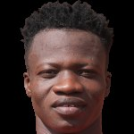

Le joueur en un coup d'œil
Rodrigue Dondasse évolue à CFFEB : 1 match(s), 28 minute(s), 0 but(s) et 0 passe(s) décisive(s) cette saison en Faso Foot Ligue 1.
Pourquoi le recruter ?
Synthèse méthodique pour dirigeants et recruteurs : chaque constat s'appuie sur les données réelles du championnat.
Le test du recruteur : 5 questions
Une méthode simple pour décider : chaque question reçoit un feu vert, orange ou rouge, calculé sur les chiffres réels.
💡 Conseil du recruteur : un bon dossier = il joue + il fait gagner des points + il est discipliné + on l'a vu jouer.
Points forts
- 🧲 6 ballon(s) récupéré(s) relevé(s) en vidéo.
Ce qu'il apporte à votre équipe
- 🔗 Relie défense et attaque : récupère et distribue vers les finisseurs.
- 🧪 À tester : visionner un match complet avant toute décision.
Points de vigilance
- ⚠️ Seulement 1 match(s) : échantillon insuffisant pour conclure.
Poste idéal et système où il brille
Lecture tactique calculée à partir des données du joueur (gabarit, buts, passes, zones occupées, vitesse, passes réussies) : le rôle le plus cohérent avec son profil, et les schémas qui le servent le mieux.
Meneur de jeu / milieu créateur
Meilleur en 4-2-3-1 (numéro 10 protégé par deux pivots) et en 4-4-2 (milieu axial qui distribue).
Ce qui l'indique
- Gabarit compact (176 cm), mobile dans les petits espaces
Autres rôles envisageables
Où il joue : son plateau tactique en 3D
Le joueur (pion doré) à son poste idéal « Meneur de jeu / milieu créateur », dans les systèmes qui le servent le mieux. Choisissez un système, faites pivoter le terrain, zoomez à la molette.
Les clubs du championnat qui ont le plus besoin de lui
Classement par ordre de besoin pour le profil « Meneur de jeu / milieu créateur » : lacunes du poste (attaque, défense, création, profondeur d'effectif, âge) et absence de ce profil dans l'effectif.

- Création n°15 sur 16 (0.29 passe(s) décisive(s) par match)
- Aucun profil « Meneur de jeu / milieu créateur » dans l'effectif

- Création n°14 sur 16 (0.43 passe(s) décisive(s) par match)
- Aucun profil « Meneur de jeu / milieu créateur » dans l'effectif

- Création n°10 sur 16 (0.57 passe(s) décisive(s) par match)
- Aucun profil « Meneur de jeu / milieu créateur » dans l'effectif

- Création n°16 sur 16 (0.29 passe(s) décisive(s) par match)

- Création n°6 sur 16 (1.0 passe(s) décisive(s) par match)
- Titulaires du poste vieillissants (âge moyen 29.7 ans)
- Aucun profil « Meneur de jeu / milieu créateur » dans l'effectif
Méthode : besoin = 55 % lacune du poste (buts marqués/encaissés, passes décisives, dépendance à un buteur, âge, profondeur) + 45 % absence du rôle dans l'effectif. Indicatif : ne remplace pas l'avis du staff.
Clubs étrangers dont l'effectif a besoin de son poste
Parmi les championnats d'Europe, d'Asie et des Amériques, clubs classés par besoin au poste « Milieu » : blessés, effectif étroit, prêts, fins de contrat, âge et gabarit recherchés, style de jeu.
- 1 blessé(s) à ce poste dont 1 de longue durée : Gabriel Cortez
- Effectif étroit : 2 joueur(s) disponible(s) au poste (minimum conseillé 5)
- 3 joueur(s) à ce poste en fin de contrat d'ici juin 2027 : le club devra les remplacer
- Gabarit type à ce poste : 177 cm en moyenne (le sien : 176 cm)
- 1 blessé(s) à ce poste dont 1 de longue durée : Takahiro Kunimoto
- Effectif étroit : 1 joueur(s) disponible(s) au poste (minimum conseillé 5)
- Gabarit type à ce poste : 176 cm en moyenne (le sien : 176 cm)
- Âge moyen des titulaires à ce poste : 28.5 ans (le sien : 29 ans)
- 1 blessé(s) à ce poste dont 1 de longue durée : Hernán Da Campo
- Effectif étroit : 3 joueur(s) disponible(s) au poste (minimum conseillé 5)
- 2 joueur(s) à ce poste en fin de contrat d'ici juin 2027 : le club devra les remplacer
- 2 joueur(s) du poste prêté(s) à l'extérieur
- 5 joueur(s) à ce poste en fin de contrat d'ici juin 2027 : le club devra les remplacer
- 2 joueur(s) du poste prêté(s) à l'extérieur
- Gabarit type à ce poste : 176 cm en moyenne (le sien : 176 cm)
- Âge moyen des titulaires à ce poste : 29.7 ans (le sien : 29 ans)
- Effectif étroit : 4 joueur(s) disponible(s) au poste (minimum conseillé 5)
- 3 joueur(s) à ce poste en fin de contrat d'ici juin 2027 : le club devra les remplacer
- 1 joueur(s) du poste prêté(s) à l'extérieur
- Gabarit type à ce poste : 177 cm en moyenne (le sien : 176 cm)
- Effectif étroit : 3 joueur(s) disponible(s) au poste (minimum conseillé 5)
- 2 joueur(s) à ce poste en fin de contrat d'ici juin 2027 : le club devra les remplacer
- 1 joueur(s) du poste prêté(s) à l'extérieur
- Gabarit type à ce poste : 174 cm en moyenne (le sien : 176 cm)
Méthode : 20 % besoin du club à ce poste (résultats, blessés, effectif étroit) + 20 % besoin précis pour son profil (blessés, prêts, fins de contrat au poste exact) + 18 % gabarit (taille moyenne des titulaires du club à ce poste) + 14 % style de jeu du club (déduit de ses résultats) + 12 % âge moyen au poste + 16 % niveau du club / niveau estimé du joueur. Mineurs : bonus aux clubs à filière jeunes. Aucun plafond de valeur ; un club n'est proposé qu'à un nombre limité de joueurs par poste. Données publiques collectées le 2026-11-07
Les 4 graphiques du joueur
Quatre lectures du joueur, toujours calculées sur ses données réelles (aucun graphique illustratif).
Positionnement par poste (radar)
Centiles parmi les joueurs du même poste (100 = meilleur de la ligue). Gris : échantillon réduit, comparaison indicative.
Zone de poste
Zone du poste déclaré sur la feuille de match : un schéma, pas une mesure (aucune analyse vidéo pour ce joueur).
Actions vidéo : passes, récupérations, tirs
Vert : passe réussie · rouge : passe ratée ou balle perdue · or : récupération · carré : duel · disque rouge : tir. Matchs analysés cumulés.
Parcours de la saison
Présence (titulaire / entré en jeu / banc), buts, passes décisives, cartons et résultat de chaque journée.
Analyse scouting personnalisée
Rédigée à partir des données réelles du joueur : feuilles de match, comparaison avec les joueurs du même poste et analyse vidéo quand elle existe. Aucune appréciation n'est inventée.
Profil et utilisation
- Rodrigue Dondasse : Milieu à CFFEB, 29 ans, n°21.
- Utilisation : seulement 1 match(s) joué(s) (28 minutes), trop peu pour qualifier un statut.
Rendement
- Rendement : 0 but(s) et 0 passe(s) décisive(s) en 1 match(s), soit 0.00 implication(s) dans les buts par 90 minutes.
- Comparaison indicative (échantillon réduit) : 29ᵉ centile parmi les milieux de référence.
- Aucune contribution directe (but ou passe décisive) enregistrée : le rôle se lit surtout par le placement et la vidéo.
Discipline
- Discipline : aucun carton en 1 match(s) (28 minutes).
Lecture vidéo
- Lecture vidéo sur 1 match(s) analysé(s), 0 min 24 s de temps vu à l'écran : valeurs approchées.
- Vitesse de pointe observée : 8.4 km/h ; 0 sprint(s) et 0 repli(s) défensif(s) vus.
- Rythme : 31 m parcourus pendant le temps vu, soit 76 m par minute vue.
- Jeu de passe : 3 passes réussies sur 4 (75 % de réussite), 0 passe(s) clé(s).
- Impact défensif : 6 récupération(s), 3 balle(s) perdue(s), 4 duel(s) gagné(s) sur 4.
- Zones occupées : surtout le tiers défensif (100 % du temps vu), dans le couloir droit (84 %).
- Fiabilité de l'identification du joueur sur les images : 29 %.
Points forts factuels
- Pas de point fort statistique net sur l'échantillon disponible.
À confirmer
- Échantillon réduit (moins de 3 matchs ou 180 minutes) : à confirmer sur davantage de matchs.
- Identification vidéo peu fiable (29 %) : valeurs à recouper avec les matchs complets.
Recommandation de suivi
- Revoir le match complet de la J5 contre Rail Club du Kadiogo : ▶ Odysee.
- À suivre sur les prochaines journées pour confirmer la tendance.
- Pour un contact ou une demande d'information : écrire à RSM Agency par WhatsApp.
Rendement sur la saison
Titulaire dans 0 des 1 match(s) observés sur les feuilles de match.
Journal des matchs 2026/27
Rôle, minutes, buts, passes et cartons match par match, avec les liens vers le Match Tracker et le match complet quand l'un des clubs suivis par RSM Agency est concerné.
| J | Date | Adversaire | Score | Rôle | Min | B | PD | Cartons | Liens |
|---|---|---|---|---|---|---|---|---|---|
| J7 | SC Majestic | V 0–2 | Remplaçant (non utilisé) | 0 | Fiche du match · Match Tracker RSM · Match complet ▶ | ||||
| J6 | ASFA Yennenga | N 1–1 | Remplaçant (non utilisé) | 0 | Fiche du match · Match Tracker RSM · Match complet ▶ | ||||
| J5 | Rail Club du Kadiogo | V 0–5 | Entré en jeu | 62′→ | Fiche du match · Match Tracker RSM · Match complet ▶ |
Vidéos, highlights et matchs complets
Liens YouTube trouvés par recherche (titre et chaîne affichés ; aucune vidéo n'est copiée) et matchs complets de RSM Agency.
Ses matchs : résumés et matchs complets
| J7 | SC Majestic | Match complet ▶ · Match Tracker RSM |
| J6 | ASFA Yennenga | Match complet ▶ · Match Tracker RSM |
| J5 | Rail Club du Kadiogo | Match complet ▶ · Match Tracker RSM |
Game Tracker : analyse vidéo match par match
Mesures issues de l'analyse vidéo des matchs de Real du Faso, CFFEB et USFA et de leurs adversaires : valeurs approchées, calculées sur le temps où le joueur est visible à l'écran.
J5 · Rail Club du Kadiogo
Valeurs approchéesParcours et statistiques de carrière
Parcours
Sélections et compétitions internationales
Aucune sélection ni compétition internationale connue.
Statistiques par compétition (championnat et coupes)
| Saison | Compétition | Équipe | M | B | PD | Min | CJ |
|---|---|---|---|---|---|---|---|
| 2026/2027 | FasoFoot Ligue 1 | CFF | 1 | 0 | 0 | 28 | 0 |
| 2026 | Coupe du Faso | RCK | 1 | 0 | 0 | 82 | 0 |
| 2025/2026 | FasoFoot Ligue 1 | RCK | 24 | 0 | 0 | 1746 | 8 |
| 2025 | Coupe du Faso | ASD | 1 | 0 | 0 | 17 | 0 |
| 2024/2025 | FasoFoot Ligue 1 | ASD | 9 | 1 | 0 | 315 | 2 |
| 2024 | Coupe du Faso | SON | 2 | 0 | 0 | 40 | 1 |
| 2023/2024 | Ligue 1 Lonab | SON | 22 | 0 | 1 | 1509 | 5 |
| 2022/2023 | Division One | NAT | 9 | 0 | 0 | 536 | 2 |
| 2021/2022 | Ligue 1 Lonab | ASF | 10 | 0 | 0 | 290 | 1 |
| 2021 | Super Coupe AJSB | ASF | 1 | 0 | 0 | 62 | 0 |
| 2021 | Coupe du Faso | ASF | 1 | 0 | 0 | 69 | 0 |
| 2020/2021 | Championnat National Première Division | ASF | 13 | 1 | 0 | 638 | 1 |
| 2019/2020 | Championnat National Première Division | ASF | 14 | 4 | 0 | 1231 | 1 |
Identité et contexte
| Club |  CFFEB CFFEB |
| Poste | Milieu |
| Numéro | 21 |
| Âge | 29 |
| Naissance | — |
| Nationalité | Burkina Faso |
| Taille | 176 cm |
| Pied fort | Droit |

Sources : feuilles de match de la Faso Foot Ligue 1, profils de carrière, analyse vidéo RSM Agency (valeurs approchées). Les champs « — » ne sont pas renseignés : aucune valeur n'est inventée. · Photo : fournisseur de données · transfermarkt.fr